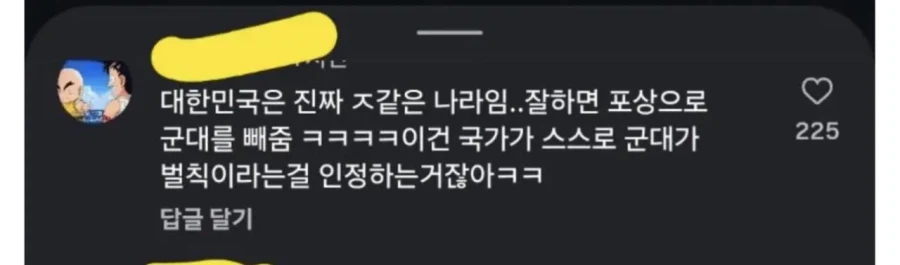

조만간 장애인도 끌고갈듯
이미ㅋㅋ
장애인 올림픽 메달따면 면제
페럴림픽?!
10년전 이등병봐도 ㅋㅋ 이새낀 어떻게 들어왔지 싶은애들 한가득임
결국 상병찍고 내보냄
아픈사람은 박박긁어서라 공익으로 기어코 보내버리면서 한국에서 제일 건강하고 강한 사람들이 군대를 빠지는게 말이됨?
그리고 몇몇 종목들은 제일 잘하는 선수보단 아직 군대안간 선수들로 채워놓는게 선후배간의 미덕쯤으로 여기는 모양새더라
아시안게임 = 병역 브로커 게임쯤 되는 거냐 ㅋㅋ
이게 국제 체육 대회의 주목적이 더 이상 국위선양이 아니라 병역면제가 됐다는 가장 분명한 증거잖아 ㅋㅋㅋ
나라 지키는게 자랑스럽다 푸하하핳하 다시 말해봐
미운놈 군현역 더 준다
반병신 <- 뭔 수를 써서라도 데려감 ㅋㅋㅋ
대한민국 신체스펙 상위 0.1% <- 뭔 수를 써서라도 군대 빼줌 ㅋㅋㅋㅋ
울 엄마 요양원에 디스크로 공익 온 친구 제대로 허리 굽히지도 못하던거 생각하면 진짜 지랄병이 따로 없음
아가리만 겸손했어도 걍 일본이긴 국민 영웅취급받았을텐데ㅉㅉ
벌칙이니깐 여자는 안보내잖아
잘못했으니 군대가고 잘했으니 군대 안가는게 맞긴해
심지어 한남들끼리 사슬 채우려고 자적자 발동 중임 ㅋㅋㅋ
그리고 저런 병역 문제에 여자들이 같이 욕하는 블랙코미디
다른데도 썻지만 욕쳐먹을거 각오하고 소신발언 해봄 선수들 군면제를 없애는 1차원적인 해결책 보다는...
까놓고 말해서 존나 군대식 해결법이자나 총기 자살사고 났다고 초병들 공포탄 주고, 군화 끈으로 목매달았다고 매듭 만들고 라이터로 지져서 전투화끈 못빼게 하고 가기 싫은 벌칙급의 병신같은 군대를 개선할 방법을 찾는게 더 생산적이지 않을까 싶음.
인생의 가장 찬란한 20대의 5분에 1을 희생한 만큼의 보상이나 대우를 받는게 당연하자나
군가산점 없애고 군대에서 사건 터지면 덮고 쉬쉬하고 나처럼 허리디스크 생겨서 병신되서 나와도 뭐 아무것도 안해주고
이렇게 만든 군대를 개선을 해야지 병신집합소 그대로 냅두고 쟤네들 혜택만 없애는 건 존나 의미 없다고 생각함.
이 사건은 쟤들만의 문제가 아니라 군대를 가기 싫은 아니 간 보람도 없는 곳으로 만든 것이 근본적인 문제라고 봄
그걸하면 여자들이 가만히 있겠나요
그 세대는 저물어가고 있는거같음. 요즘 2030들은 마인드가 건강하게 바뀌고있는거 같더라고
자본사회 특징이지 방법잇냐 새끼를 치면안된다니까
다들 뺼 수 있으면 어떻게든 뺄 거잖아 그걸 못했으니까 씨발씨발 거리면서 다녀왔던거고
의무를 안해도 되니깐 벌칙 맞지
남녀 둘다 군대가는 상황이었으면
금메달 병역면제 어케 됐을까? ㅋㅋㅋㅋ
포상이나 혜택의 반대가 벌칙도 아니고. 벌칙처럼 받기 싫다는 인식은 사실상 독박병영, 21세기 한국에만 있는 노예제인 공익 쪽에서도 공유되는 게 사실인데. 저런 얘들이 군대 폰 도입이니 월급 그나마 올리는 거니 이 악물고 반대했을 듯 ㅋㅋ
모두가 벌칙인걸 알고있으면서 벌칙 면제받은 사람을 축하해주질 못할 망정 욕하는게 아이러니하네
직업으로 한걸 그걸 왜? 직업 군인이나 안보로 빠진것도 아닌데?
저런 논리면 부자들을 빼줘야지.
누적 500억 이라던지. 다만 안보나 인식 교육을 꼭해야지 북한이 적이 아니라고 하는게 ㅋㅋㅋ
재정신 이냐고 미필새끼들이
100년도 지난것도 아닌데도 이러는게 참 대단함
한국은 건강과 운동 능력이 뛰어날수록 군대를 빼주고 안좋을수록 징집하는 이상한 나라지 ㅋㅋ